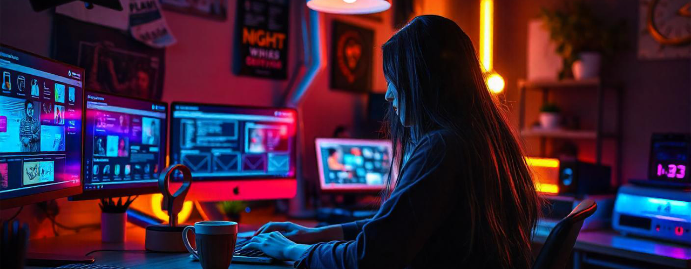

UI/UX Design Trends: What to Expect in the Future
The digital landscape is constantly evolving, and with it, UI/UX design is continually shifting to meet new user expectations and technological advancements. In the coming years, several trends are poised to transform how we approach digital interfaces, making experiences more seamless, personalized, and accessible. Here’s a glimpse into the future of UI/UX design and the trends that are set to dominate the field.
Category:
Posted by:
admin
Posted on:
Oct 11
1. AI and Machine Learning-Powered Experiences
Artificial intelligence (AI) and machine learning are becoming integral to personalized user experiences. Future interfaces will increasingly leverage AI to predict user behavior, making interactions more intuitive. From personalized content recommendations to adaptive interfaces that learn user preferences, AI will allow for a highly customized experience, reducing friction and enhancing user satisfaction. Designers will need to collaborate closely with AI experts to create systems that feel natural and responsive.
2. Voice User Interfaces (VUI)
With the rise of smart assistants like Alexa, Google Assistant, and Siri, voice-activated interfaces are becoming more commonplace. The future of UI/UX will likely see a greater emphasis on VUIs, where users interact with systems using voice commands. This will be especially important for hands-free environments or users with accessibility needs. Designers will need to focus on creating seamless voice interactions, improving voice recognition accuracy, and ensuring natural conversational flow.

3. Augmented Reality (AR) and Virtual Reality (VR) Integration
AR and VR are no longer just buzzwords in tech—they are becoming key components of the user experience in gaming, education, retail, and healthcare. As these technologies become more accessible, we can expect AR and VR to revolutionize UI/UX design by offering immersive, 3D experiences. In retail, for example, users might virtually try on clothes or place furniture in their homes before purchasing. Designers will need to consider how to create intuitive, immersive experiences that blend digital elements with the real world.
4. Neumorphism and Beyond
Neumorphism, a design trend that combines flat design with skeuomorphism (realistic design), gained popularity for its soft, almost tactile interface elements. While its initial appeal might fade, the broader trend of blending realism with minimalism is likely to continue. Future UI/UX design will move towards even more subtle depth and shadow effects, creating a balance between aesthetics and usability. The challenge for designers will be ensuring that interfaces remain accessible while maintaining visual appeal.
5.Sustainable Design
As the focus on environmental sustainability grows, so will the demand for sustainable UI/UX design. This trend will focus on reducing digital pollution—such as unnecessary data use or energy consumption—by optimizing digital experiences. Designers will need to consider the environmental impact of their designs, ensuring that websites and applications load quickly, use minimal resources, and offer energy-efficient dark modes. The rise of eco-conscious users will push sustainability to the forefront of design thinking.
Final Thoughts
AThe future of UI/UX design promises to be more user-centric, immersive, and personalized than ever before. As technology continues to advance, designers must stay ahead of the curve by embracing new tools, thinking creatively, and always keeping the user experience at the heart of their work. By adopting these trends, designers can create interfaces that not only look great but also provide meaningful, seamless experiences for users across all platforms.